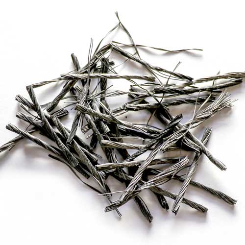
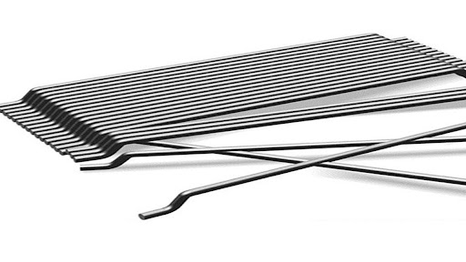

بتن الیافی؛ انواع و مزیت های آنها
بتن الیافی؛ انواع و مزیت های آنها
همانطور که پروژه ساخت و ساز بتنی بعدی خود را برنامه ریزی می کنید، در اینجا مزایایی کلیدی بتن تقویت شده با الیاف ارائه می گردد که هم شما و هم مشتریانتان باید در نظر بگیرید:
در پی همه گیری جهانی COVID-19، مصالح ساختمانی مانند فولاد (به عنوان یک ماده ضروری برای استفاده در کاربردهای بتن سنتی) به طور قابل توجهی تحت تأثیر افزایش قیمت و کمبود مواد قرار گرفته است. اگرچه این موضوع ممکن است برای مشاغل و ارگانهای دولتی که قرار است پروژههای ساختوساز شامل عرشههای پارکینگ، جادهها، پلها و سایر تعمیرات مرتبط با بتن را آغاز کنند یا در حال ساخت هستند، نگرانکننده باشد، اما ممکن است در ظاهر مزیتی باشد که اکنون میتوانند از مزایای کوتاه مدت و بلند مدت بتن مسلح با الیاف استفاده کنند.
بتن الیافی یک مخلوط بتنی است که با الیافی با جهت تصادفی تقویت میشود. بسته به پروژه و تأثیرات محیطی که ممکن است بر بتن تأثیر بگذارد، طیف گسترده ای از الیاف وجود دارد که به طور خاص با نیازهای پروژه خاص شما مطابقت دارد. برخی از انواع الیاف موجود به شرح زیر است:
ماکروالیاف مصنوعی (الیاف ماکروسینتتیک): در کاربردهایی برای جایگزینی تقویتکنندههای معمولی برای کاربردهای کفسازی، قطعات پیشساخته و شاتکریت استفاده میشود.

الیاف فولادی: عموماً برای تهیه بتن با چقرمگی و ظرفیت باربری پس از ترک بتن استفاده می شود.

ترکیبات فولادی و میکرو/ماکرو: ترکیبی از الیاف فولادی و یا الیاف ماکروسنتتیک با الیاف میکروسنتتیک مختلف که به کنترل ترک خوردگی انقباض پلاستیک کمک میکند و در عین حال چقرمگی و ظرفیت باربری بتن پس از ترک را افزایش میدهد.
الیاف شیشه: عمدتاً در کاربردهای معماری و سازههای پانل مبتنی بر سیمان اصلاح شده استفاده میشود.
الیاف سلولزی: محصول پردازش شده خمیر چوب است که برای کنترل و کاهش ترک خوردگی انقباض پلاستیک استفاده می شود.
در طول چند سال گذشته، ما شاهد افزایش علاقه به استفاده از بتن تقویتشده با الیاف در کاربردهای روسازی و کفسازی بتنی مانند پارکینگها، عرشه پلها و جادهها بودهایم. سازمانهایی مانند مؤسسه بتن آمریکا، انجمن روسازی بتن آمریکا و مرکز ملی فناوری روسازی بتن دستورالعملها و توصیههایی را در مورد نحوه انتخاب و استفاده صحیح الیاف در بتن ارائه کردهاند:
- ACI PRC-544.4-18: Guide to Design with Fiber-Reinforced Concrete
- NCPTC Fiber-Reinforced Concrete for Pavement Overlays
- NCPTC Overview of Fiber-Reinforced Concrete Bridge Decks
در حالی که ممکن است پیشرفت جدیدی در ساخت و ساز به نظر برسد، بتن الیافی در واقع چندین دهه است که وجود داشته است. با این حال، از آنجایی که سازمان ها و مشاغل به دنبال گزینهای کمهزینه هستند که دوام و توانایی توسعه طرحهای پیشرفته را فراهم کند، استفاده از بتن تقویتشده با الیاف افزایش یافته است.
نمونههایی از پروژههایی در امریکا که از بتن تقویتشده با الیاف استفاده کردهاند عبارتند از استادیوم SoFi، استادیوم خانگی Los Angels Rams و Los Angeles Chargers، و بازسازی بزرگراه در Fowler, Ind..
هفت مورد از مزایای کلیدی استفاده از بتن تقویت شده با الیاف
1- مقرون به صرفه بودن: به گفته مرکز ملی فناوری روسازی بتن، "بتن الیافی میتواند راهحلی مقرونبهصرفه و پایدار برای روکشسازی و بازسازی روسازیهای موجود ارائه دهد. چه به عنوان روکش یا روسازی جایگزین با عمق کامل، در امریکا DOT های دولتی و سایر گروه های مهندسی به سرعت از الیاف بتن ماکروسینتتیک در طرح ها، مشخصات و پروژه های آزمایشی خود برای روسازی جاده ها و فرودگاه استفاده می کنند".
2- نیروی انسانی کمتر مورد نیاز: با محدودیتهای نیروی انسانی موجود و عدم قطعیتهای هزینهای که بر صنعت ساختوساز پس از همهگیری تأثیر میگذارد، بتن تقویتشده با الیاف میتواند محیط کاری ایمنتر و مقرونبهصرفهتری ارائه دهد که در واقع میتواند سرعت ساخت و ساز را افزایش دهد و در عین حال اثرات زیستمحیطی پروژه را کاهش دهد. از منظر ایمنی، داشتن پرسنل کمتر در محل و کاهش خطرات سفر از مزایای قابل توجهی است و امکان افزایش سرعت اجرا را فراهم می کند.
3- کاهش تاخیر: با کسر استفاده از میلگرد فولادی معمولی، بازدید از محل دپو و تولید و اجرای میلگرد فولادی توسط سازمان ها و افراد پروژه الزامی نیست. بتن باید با تقویت کننده الیافی که توسط یک تامین کننده الیاف تامین می شود اجرا گردد و قبل از اجرا توسط تامین کننده در کارخانه بتن یا محل پروژه توسط تامین کننده تامین گردد. کامیون های آماده می توانند به سرعت و کارآمد بتن را در محل مورد نیاز پروژه با حداقل اقدامات تکمیلی مورد نیاز قرار دهند.
4- بهبود قابلیت سرویس دهی طولانی مدت: بتن می تواند در برابر خوردگی، یخ زدگی و ذوب شدن، حملات نمک سنتی جاده، و نفوذ سایر محلول های تهاجمی حساس باشد. دوام بتن را می توان با به حداقل رساندن توانایی نفوذ آب و سایر محلول ها به خارج از سطح بهبود بخشید. بتن تقویت شده با الیاف به حفظ کنترل قوی ترک کمک می کند، که این امر به کاهش اندازه عرض ترک کمک کرده و در نهایت از نفوذ آب و سایر محلول ها به بتن جلوگیری می کند.
5- تقویت در برابر تغییرات دمایی دما و انقباض: بتن تقویتشده با الیاف میتواند بهعنوان یک جایگزین مقرونبهصرفه برای تقویتکننده سیم جوشی و میلگردهای با قطر کوچک برای محافظت در برابر دما و مشکلات انقباض استفاده شود.
6- کاهش هزینه: بتن تقویت شده با الیاف می تواند زمان ساخت و ساز را کاهش داده و در نتیجه هزینه کلی کار را کاهش دهد و همچنین هزینه های تعمیر و نگهداری را نیز می تواند کاهش دهد، که نه تنها برای پیمانکاران مفید است، بلکه این پس انداز می تواند در قالب کاهش هزینه برای پروژه تکمیل شده به مشتریان منتقل شود. علاوه بر این، بتن تقویت شده با الیاف به طور قابل توجهی هزینه تعمیر و نگهداری مداوم را کاهش می دهد.
7- دوستدار محیط زیست: مشابه لاستیک های قدیمی و کفش های ورزشی که برای استفاده در زمین های چمن مصنوعی ورزشی بازیافت می شوند، بتن تقویت شده با الیاف می تواند راه حلی سازگار با محیط زیست باشد. با توجه به اینکه الیاف فولادی از فولاد ساخته شده اند (که از آهن ساخته شده است، یک منبع طبیعی تخریب کننده) ممکن است هزینه بالای فولاد توجیه نشود، به خصوص با کاهش هزینه نگهداری مرتبط با بتن تقویت شده با الیاف. الیاف فولادی بازیافتی ممکن است یک رویکرد سازگار با محیط زیست و مقرون به صرفه تر باشد.
تحقیقات نشان داده است که الیاف فولادی بازیافتی، که از محصولاتی مانند رینگهای لاستیک ماشین بازیافتی ساخته میشوند، میتوانند نتایج مشابهی با الیاف فولادی تجاری تولید کنند - با کسری از هزینه. در کنار به حداقل رساندن زباله های دفن زباله، صرفه جویی در هزینه های ایجاد شده با استفاده از فولاد بازیافتی می تواند به مشتریان نیز منتقل شود.
از آنجایی که ابهامات مربوط به همه گیری کووید-19 همچنان پابرجاست، بتن تقویت شده با الیاف نه تنها به عنوان آینده صنعت ساخت و ساز عمل می کند، بلکه به عنوان یک راه حل مناسب برای محافظت از سلامت و ایمنی پرسنل ساختمانی و مخاطرات مالی مشاغل و سازمان ها عمل میکند.
بهترین مطالب هر ما
ارسال میشه به صندوق پستی شما!
این بالا کلیک کن و ایمیلت رو بنویس
ثبت